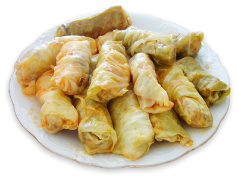

SARMA MAKING

These sauerkraut cabbage rolls, which successfully combine sweet,
spicy, savory, and sour flavors, are like a family hug, real comfort food in the Balkans way
Ingredients
- 2 lbs sour cabbage leaves (or one large head)
- 10 ounces ground veal (beef or lamb may be used if you prefer)
- 1⁄3 cup rice
- 1 medium onion, finely minced
- salt and pepper
- paprika
- beef stock or water
- butter and sour cream, to serve
Steps
- Separate the cabbage leaves, being careful not to tear them.
- Mix meat, rice, onion, salt, pepper, and paprika.
- Place about a tablespoon or more (use your own judgment based on the size of the leaves) of the meat mixture into each cabbage leaf, near its base.
- Begin rolling the leaf from the base into a thick cylinder, tucking in the sides after the first "roll."
- Layer the cylinders tightly into a medium-sized or large pot.
- Cover the sarma with beef stock or water (I find that if you use water, it makes its own broth anyways with the mwad as it cooks)
- Cover the pot, bring to boil, and simmer for at least three hours.
- Serve with butter and sour cream, with ro without some of the cooking liquids according to your preference.